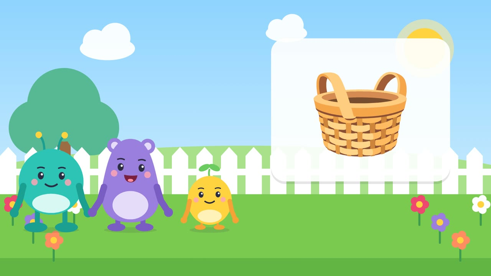

Gentle learning cartoons for ages 2 to 5
Tappy Things is a YouTube channel of original animated episodes for toddlers and preschoolers. Each episode teaches one small thing, slowly and kindly, and leaves time for your child to answer.

What children learn
Colours, numbers, shapes, letters, animals, feelings, daily routines, staying safe, kindness and nature. One clear learning goal per episode, repeated in a little story and a game.
Meet the friends
Tappy is the curious host who always waits for your child's answer.
Momo is gentle and calm, and notices how others feel.
Pip is the little one who sometimes gets it wrong, tries again and cheers.
Bo loves questions and explains the "why" in one short sentence.
For parents
Episodes are slow-paced, with no flashing, nothing scary and nothing to buy. They work best when you watch together: pause when a character asks a question, and let your child point or say the word.
All characters, artwork and music are original. Voices are synthesised.
Contact
Questions or feedback: minhhien2008z@gmail.com